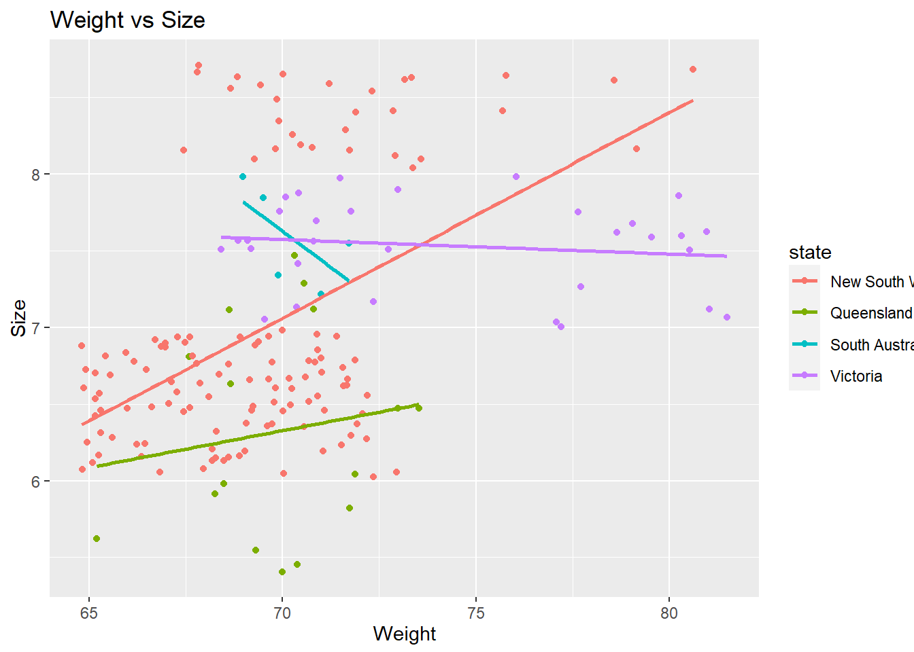

Chapter 8 Challenge3
- dplyr and ggplot together remove the weight higher than 3rd quartile
- plot weight and size with method glm label the axis
- have a tile and state as colour
summary(koala)## species X Y
## Phascolarctos cinereus:242 Min. :138.6 Min. :-39.00
## 1st Qu.:150.0 1st Qu.:-34.49
## Median :152.0 Median :-32.67
## Mean :150.3 Mean :-32.36
## 3rd Qu.:152.9 3rd Qu.:-30.31
## Max. :153.6 Max. :-21.39
## state region sex weight
## New South Wales:181 northern:165 female:127 Min. : 5.406
## Queensland : 16 southern: 77 male :115 1st Qu.: 6.574
## South Australia: 14 Median : 7.277
## Victoria : 31 Mean : 7.923
## 3rd Qu.: 8.765
## Max. :17.889
## size fur tail age
## Min. :64.81 Min. :1.110 Min. :1.004 Min. : 1.00
## 1st Qu.:68.43 1st Qu.:2.410 1st Qu.:1.272 1st Qu.: 3.00
## Median :70.27 Median :2.797 Median :1.534 Median : 7.00
## Mean :70.94 Mean :2.896 Mean :1.507 Mean : 6.43
## 3rd Qu.:72.33 3rd Qu.:3.217 3rd Qu.:1.750 3rd Qu.: 9.00
## Max. :81.91 Max. :5.876 Max. :1.981 Max. :12.00
## color joey behav obs
## chocolate brown:21 No :185 Feeding : 48 Opportunistic:65
## dark grey :36 Yes: 57 Just Chillin: 67 Spotlighting :94
## grey :69 Sleeping :127 Stagwatching :83
## grey-brown :53
## light brown :20
## light grey :43koala %>%
filter(weight<=8.76)%>%
ggplot(aes(size,weight, color=state))+
geom_point() +
geom_smooth(method='glm', se=F)+labs(title="Weight vs Size", x= "Weight", y="Size")## `geom_smooth()` using formula 'y ~ x'